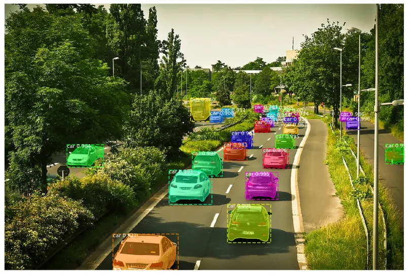
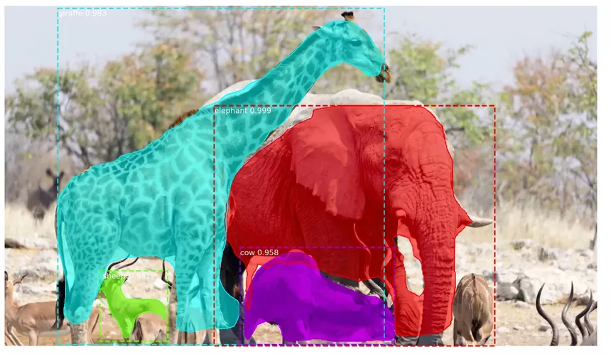
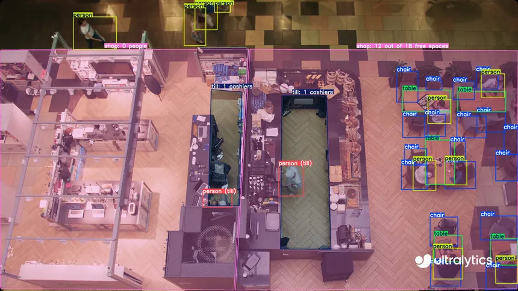

Utilidad, compatibilidad, mantenimiento y riesgos de adopción en una empresa que inspecciona ríos con drones.


Detección de objetos y segmentación de instancias.

Lenguaje base. Keras y TensorFlow sostienen el modelo.
400 entradas recientes en 4 páginas de 100, sin los pull requests.
Es el corte de noviembre de 2026, no el total histórico. No incluye los abiertos.
Binarios y versiones de NumPy, TensorFlow y Keras.
Construir OpenCV y configurar entornos.
Lentitud, GPU, clases desbalanceadas y resultados pobres.
Adaptar datasets, clases y máscaras al propio dominio.
Su salida es una alerta visual que se valida en campo, no un diagnóstico ambiental.
Imágenes etiquetadas por expertos y representativas.
Un indicio visible no es contaminación confirmada.
GPU, VRAM y tiempo de inferencia.
Formatos, georreferencia, drones y panel.
Dependencias, licencias y responsable técnico.
Precisión, recall, IoU/mAP y revisión humana.
Las versiones cambian con el tiempo. El conteo de issues indica el alcance de la muestra y la fecha de consulta, no una cifra histórica permanente.
Evaluación técnica de Mask R-CNN. Trabajo académico: Visión artificial aplicada a la inspección de ríos.